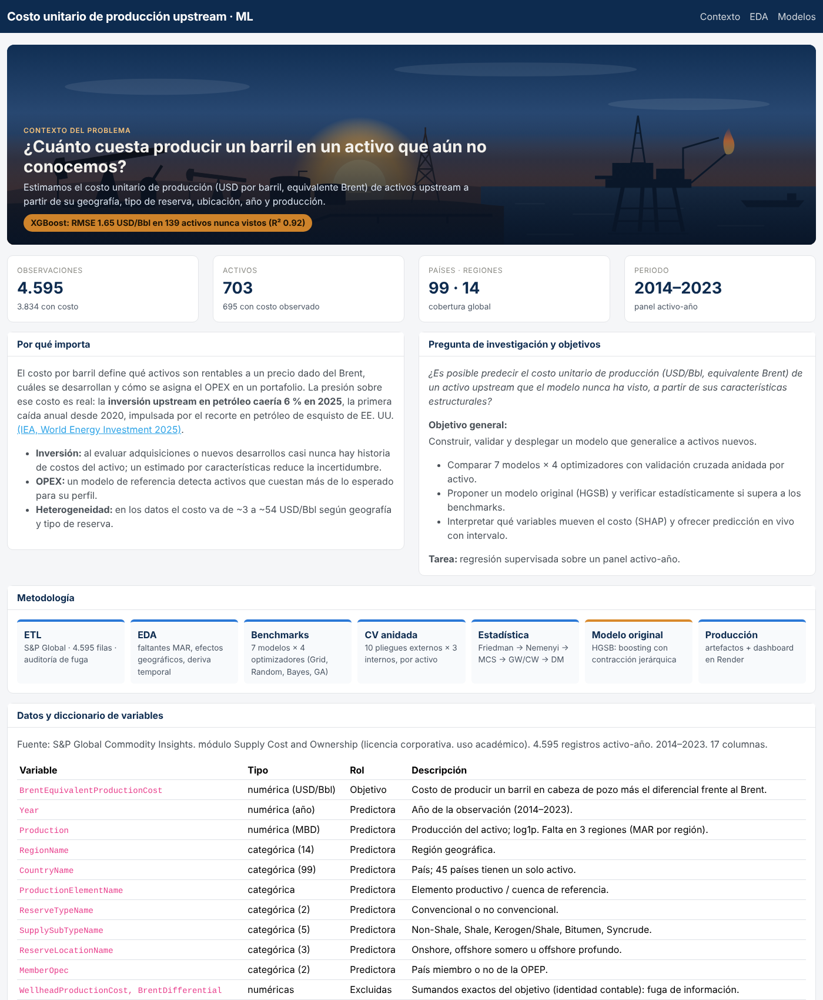
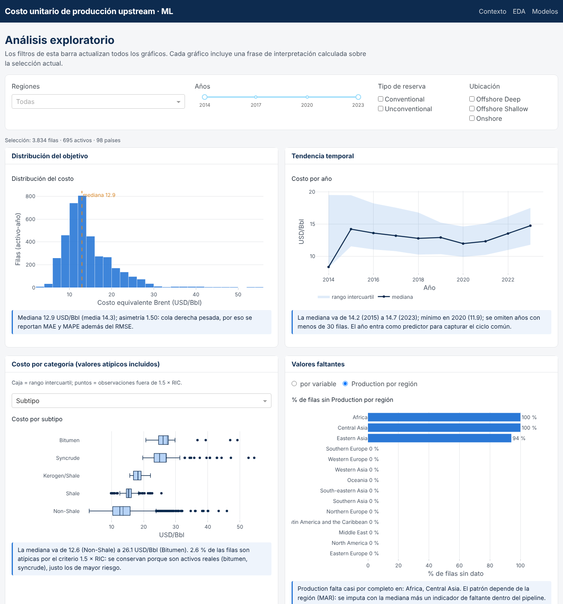
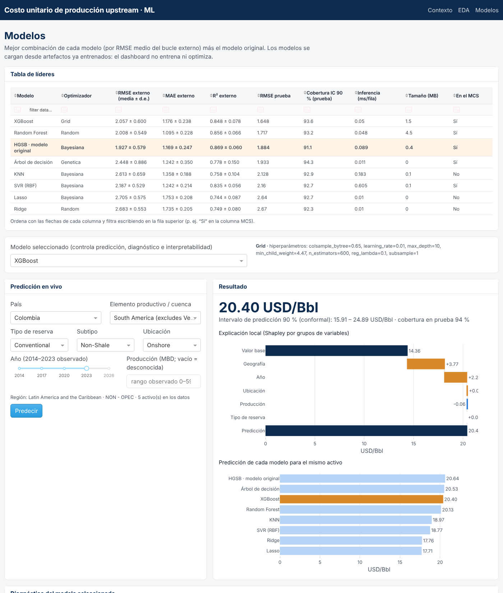
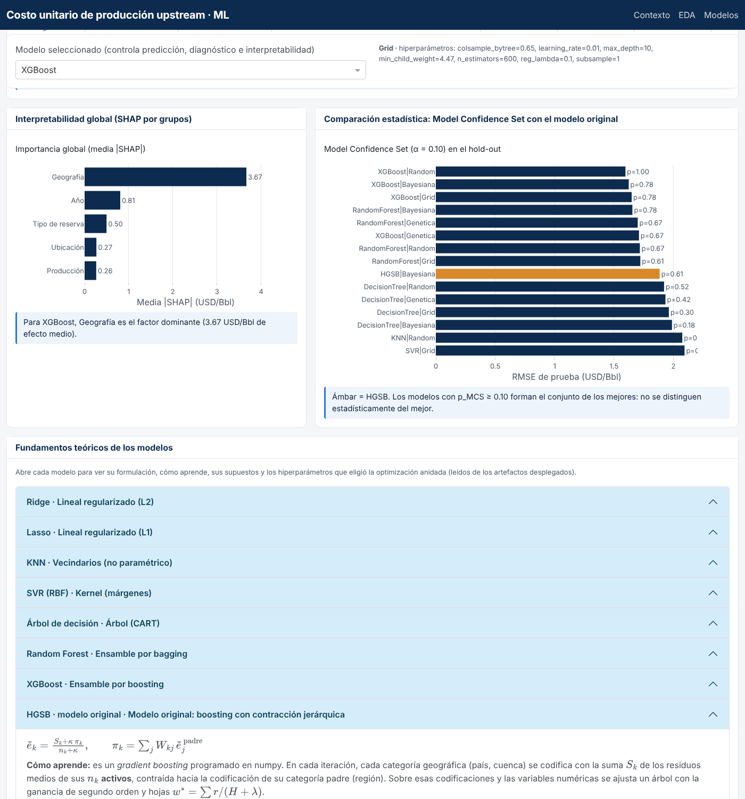
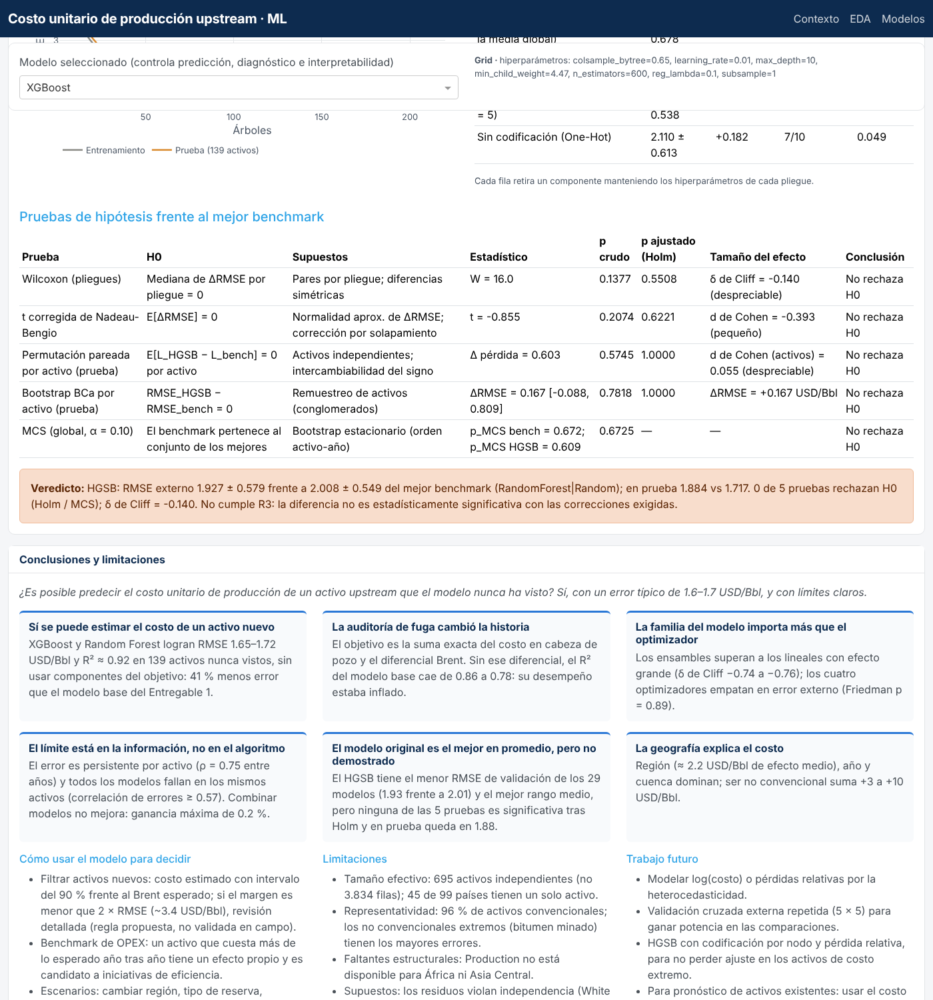

7. Dashboard y despliegue#
URL pública: https://ml-costo-upstream-dash.onrender.com (Render, plan gratuito: la primera visita después de un rato de inactividad puede tardar unos 50 segundos en despertar el servicio).
7.1 Arquitectura#
La aplicación es multipágina (use_pages=True) y separa interfaz, lógica de datos y artefactos:
ml-costo-upstream/
├── app.py # punto de entrada: crea la app, la barra de navegación y expone `server`
├── pages/
│ ├── contexto.py # sección 1: problema, pregunta, datos, metodología, limitaciones
│ ├── eda.py # sección 2: filtros globales + 6 vistas con frase de interpretación
│ └── modelos.py # sección 3: líderes, predicción en vivo, diagnóstico, SHAP, MCS, modelo original
├── src/
│ ├── original_model.py # clase del modelo original (HGSB)
│ ├── dash_data.py # carga y caché (lru_cache) de datos, tablas y artefactos
│ ├── plots.py # funciones de graficación reutilizables y plantilla Plotly
│ └── explain.py # Shapley por grupos e intervalos conformales
├── artifacts/<Modelo>/ # model.joblib + metadata.json (8 modelos) · leaderboard.csv · conformal.json
├── assets/ # style.css, ilustración de portada
├── tests/ # pruebas unitarias (pytest)
├── tools/build_artifacts.py
├── requirements-render.txt # versiones exactas para el despliegue
└── render.yaml # Web Service: gunicorn app:server
Decisiones de diseño
El dashboard no entrena ni optimiza. Solo carga
artifacts/*/model.joblib(serializados conjoblib.dump(..., compress=3)) y tablas precalculadas. Cada artefacto pasó una prueba de ida y vuelta: sus predicciones sobre el conjunto de prueba son idénticas (np.array_equal) a las del modelo en memoria.Rendimiento: datos y modelos se cargan una vez por proceso (
functools.lru_cache). Cada filtro del EDA actualiza solo los gráficos que dependen de él, y la predicción solo corre al pulsar Predecir o al cambiar de modelo.Robustez: las entradas se validan (producción ≥ 0, años fuera del periodo observado con advertencia) y cualquier error se muestra en un
dbc.Alertsin detener la aplicación.Diseño: tema FLATLY de
dash-bootstrap-components, paleta de cinco colores (azul marino, azul, ámbar, gris y azul claro), barra de navegación fija y rejilladbc.Row/dbc.Colque se adapta a tablet y móvil. El modelo seleccionado se resalta en ámbar y el resto en gris: el color nunca es el único portador de información, porque cada gráfico lleva título, ejes con unidades y texto en hover.Datos con licencia: el CSV de S&P Global no está en GitHub. En Render se carga como Secret File (
/etc/secrets/DatasetOilCostProjectWorldwide.csv); en local se lee dedata/. Así el EDA sigue siendo dinámico sin publicar los datos.
7.2 Contenido por sección#
Sección |
Contenido mínimo de la guía |
Implementación |
|---|---|---|
Contexto |
Problema y relevancia con cifra citada; pregunta y objetivos; datos y diccionario; tipo de tarea; metodología; limitaciones, ética, autores, versión |
Portada con resultado clave, cifra de la IEA [International Energy Agency, 2025], diccionario de 12 variables, diagrama del pipeline, tarjeta de limitaciones y autoría |
EDA |
Filtros globales; distribución del objetivo; univariadas y bivariadas con explorador; correlación; faltantes; atípicos; frase de interpretación |
Región (Dropdown), años (RangeSlider), tipo y ubicación (Checklist). Histograma, tendencia anual, cajas por categoría con atípicos, faltantes por variable o por región, explorador x/y/color, Spearman e identidad contable. Cada gráfico tiene su frase calculada sobre la selección |
Modelos |
Tabla de líderes; predicción en vivo con intervalo y SHAP local; diagnóstico; SHAP global; comparación estadística; subsección del modelo original |
|
Intervalo de predicción. Conformal partido relativo [Lei et al., 2018]: con las predicciones fuera de pliegue del entrenamiento (train) se calcula el cuantil \(q\) de \(|y-\hat y|/\hat y\) al nivel \(\lceil (n+1)(1-\alpha)\rceil/n\) y el intervalo es \(\hat y(1\pm q)\). Es relativo porque el error crece con el nivel del costo. La cobertura observada en el hold-out se reporta en la tabla de líderes.
Explicación local. Valores de Shapley exactos sobre cinco grupos de variables (geografía, tipo de reserva, ubicación, año y producción) con función de valor intervencional sobre un fondo de 15 filas del entrenamiento (train) [Sundararajan and Najmi, 2020]. Con \(2^5 = 32\) coaliciones el cálculo es exacto, funciona igual para los ocho modelos y cumple la eficiencia: base \(+\sum_j \phi_j = \hat y\). Agrupar la geografía evita combinaciones imposibles como un país en una región que no es la suya.
7.3 Capturas de pantalla#


Figura 1 Contexto. Portada con el resultado clave, indicadores del conjunto de datos, relevancia con cifra citada de la IEA, pregunta de investigación y objetivos, diagrama de la metodología y diccionario de variables.#


Figura 2 EDA. Filtros globales (región, años, tipo de reserva y ubicación) que actualizan todos los gráficos; cada gráfico lleva una frase de interpretación calculada sobre la selección.#


Figura 3 Modelos. Tabla de líderes ordenable y filtrable (el HGSB resaltado) y predicción en vivo con intervalo conformal del 90 %, explicación local de Shapley por grupos y comparación de los ocho modelos para el mismo activo.#


Figura 4 Modelos: interpretabilidad, MCS y fundamentos teóricos. Importancia SHAP global del modelo seleccionado, Model Confidence Set con el HGSB incluido y un panel por modelo con su formulación, cómo aprende y los hiperparámetros elegidos.#


Figura 5 Modelos: pruebas, veredicto y conclusiones. Tabla de pruebas de hipótesis del HGSB con p ajustados y tamaños del efecto, veredicto sobre R3, hallazgos principales, uso del modelo para decidir, limitaciones y trabajo futuro.#
7.4 Guía de despliegue en Render#
Verificar en local:
python app.pyy abrir http://127.0.0.1:8050.requirements-render.txtfija versiones exactas (incluyegunicornydash-bootstrap-components) yrender.yamlfijaPYTHON_VERSION.Hacer push a GitHub. Render redespliega automáticamente con
pip install -r requirements-render.txtygunicorn app:server.En Render, Environment → Secret Files: subir
DatasetOilCostProjectWorldwide.csv.Revisar los logs de construcción y abrir las tres páginas en la URL pública. Antes de la sustentación, abrir la URL varios minutos antes para despertar el servicio.
Memoria. Los ocho artefactos suman unos 7 MB comprimidos; el Random Forest (173 árboles de profundidad 27) es el más pesado. No fue necesario reducir árboles ni usar Git LFS.